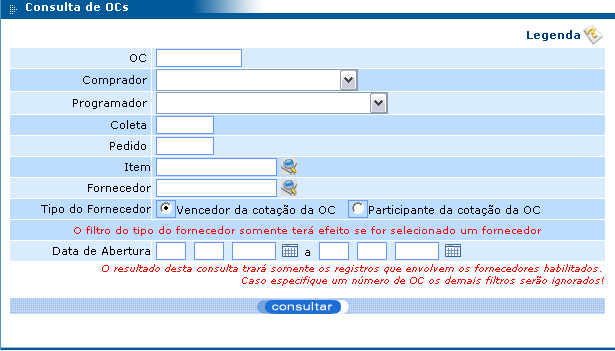
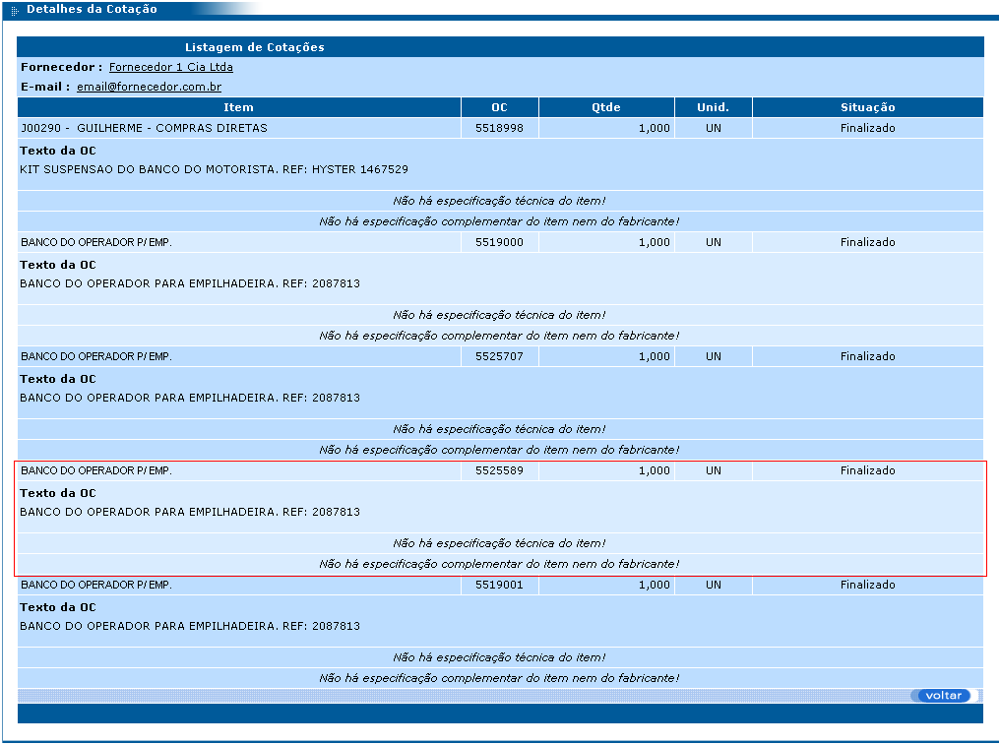
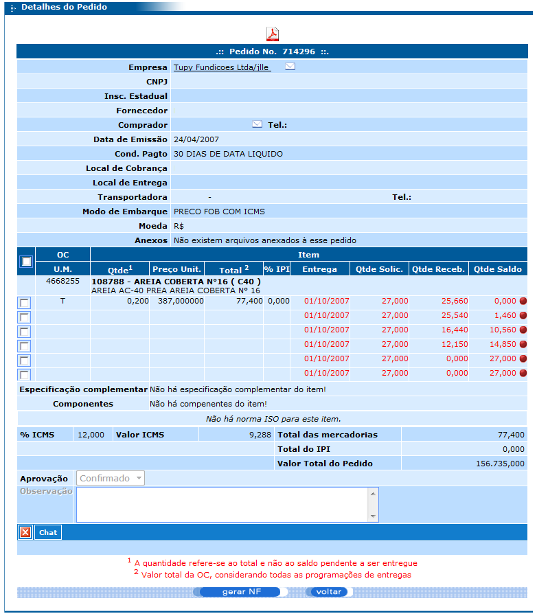
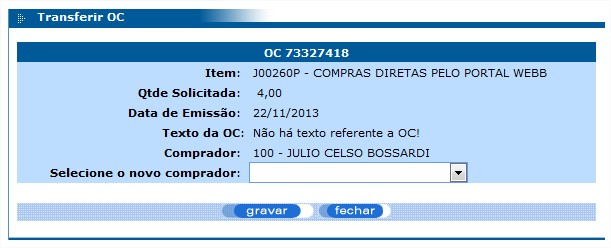
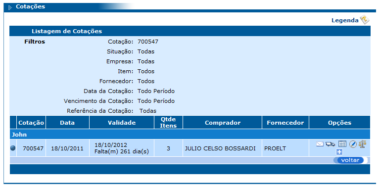
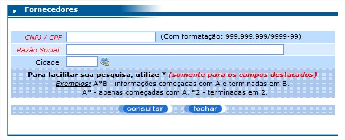
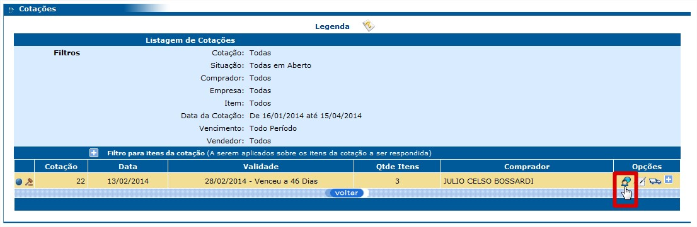
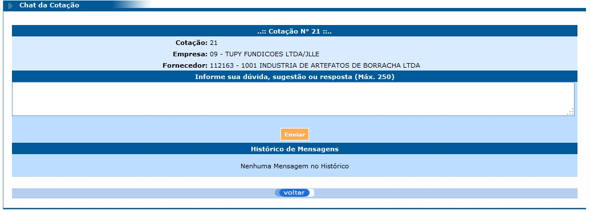
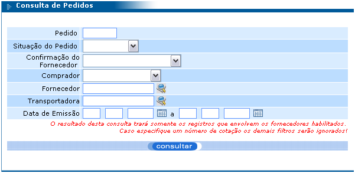

Menu Consultas
Fornece acesso às consultas de OC (ordem de compra), Cotações e Pedidos.
Consulta de OC
Esta consulta possui diversos filtros que facilitam a pesquisa de OCs. Veja:
Após informar os valores para os filtros desejados e clicar no botão “consultar”, é exibida uma listagem contendo informações da OC, como: número da OC, descrição do item, número do pedido, quantidade solicitada, nome do comprador, data de emissão e o texto da OC.

Observe que existem dois botões no rodapé das informações de cada OC chamados “Assinaturas” e “Cotações que participou”.
Ao clicar no botão “Assinaturas”, são exibidas informações das aprovações feitas antes da compra, como: nome, cargo e nível de autoridade de quem autorizou a compra. Isto se faz necessário em casos onde não se pode realizar a compra do item sem prévia autorização.
Ao clicar no botão “Cotações que participou”, são exibidas as informações das cotações que continham esta ordem de compra juntamente com as informações do orçamento de cada fornecedor. Veja a figura a seguir:

Neste exemplo, existiram duas cotações para este item de dois fornecedores diferentes onde cada fornecedor informou o seu preço, prazo de entrega, condição de pagamento, modo de embarque e a validade da proposta. A linha contendo as informações do fornecedor vencedor fica sempre destacada na cor amarela e com o símbolo.
Observe que as informações das colunas Fornecedor, Cotação, Cond. Pgto. e Modo de Embarque ficam sublinhados. Isto significa que é possível clicar sobre elas para obter mais detalhes.
Ao clicar sobre o nome do fornecedor, é exibido um detalhamento do mesmo, como mostra a figura a seguir:

Ao clicar sobre o número da cotação, são exibidos mais detalhes sobre a mesma, inclusive os demais itens desta cotação. Neste exemplo, serão visualizados os detalhes da cotação 1861, observe:
O item destacado na figura acima é o que se refere à ordem de compra de número 5525589 utilizada nos exemplos deste manual. Entretanto, pode-se verificar que, nesta mesma cotação, há outras ordens de compra para este mesmo item.
Na figura 29 acima (Detalhamento das cotações do item da OC), é exibido o número do pedido (841006) em que o item do exemplo foi solicitado. Clicando neste número, são exibidos todos os detalhes do pedido em questão, veja:
Para imprimir este pedido, basta clicar na imagem que fica no topo da tela.
Transferência de ordem de compra
A partir da versão 341.1.1 é possível fazer a transferência de ordem de compra, para isso faça a busca para que a cotação desejada apareça na listagem de cotações conforme a imagem abaixo.

Após efetuar a consulta, clique no botão “Transferir OC”, para que a modal de transferência apareça conforme a imagem abaixo.
Para efetuar a transferência, selecione o novo comprador na caixa de seleção e clique em gravar.
Consulta de Cotações
Esta consulta também oferece vários tipos de filtros que facilitam a pesquisa de cotações.

Após clicar no botão “consultar”, é exibida a listagem de cotações conforme mostra a figura a seguir:
Observe que existe uma coluna no canto esquerdo da listagem que exibe um símbolo que informa a situação de cada cotação. Existe uma legenda para estes símbolos que pode ser acessada clicando no link “Legenda” localizado no canto superior direito da tela de Consulta de Cotações (figura 34) e da tela de Listagem de Cotações.

• Cotação “Respondida parcialmente”: é quando apenas algumas OCs foram respondidas, restando algumas sem respostas.
• Cotação “Respondida totalmente”: é quando todas as OCs foram respondidas.
• Cotação “Finalizada”: é quando todas as OCs foram respondidas e já foi designado um fornecedor vencedor para a cotação.
• Cotação “Vencida”: é quando a data limite da resposta é superior a data atual (não considera a quantidade de OCs respondidas).
• Cotação “Suspensa”: é quando o usuário alterou a situação da OC para suspensa.
A partir da versão 341.1.5 o status da cotação é alterado ao gerar uma nova rodada, e passa ao seu estado inicial novamente, sendo assim as cotações voltarão ao status ‘Sem nenhum item respondido’ caso o novo round seja gerado e os fornecedores ainda não tenham respondido nenhuma ordem de compra.
É possível visualizar detalhes de cada cotação listada. Basta clicar no botão “+” que fica na coluna Opções da listagem (veja a figura 29). Estes detalhes são informações do tipo: nome do fornecedor; quantidade de itens em aberto, respondidos e finalizados; datas e quantidades de e-mails de cobrança enviados, dentre outras.
Ainda na figura 30 podemos observar o acesso ao painel de análise da cotação que é o ícone na coluna ‘opções’, conforme imagem:
Alteração de Cotação
Adicionar ordem de compra
A partir da versão 341.1.5, após a criação de uma cotação é possível que o comprador adicione uma ordem de compra ou um fornecedor dentro da cotação.
Para isso ao buscar uma cotação o comprador deve clicar no ícone para alterar a cotação conforme a imagem abaixo.

Com isso aparecerá a tela para alteração de cotação conforme a imagem abaixo.

Para que uma OC seja inserida na cotação clicar no botão “Adicionar OC”, para que a modal de busca de ordens de compra apareça conforme a imagem abaixo.

Após efetuar a buscar com as informações da ordem de compra, será listada as OCs correspondentes, dessa forma selecione as OCs desejadas e clique em gravar para que elas apareçam na listagem de OCs na tela de alteração de cotação, após isso as OCs serão inseridas dentro da cotação.
Adicionar fornecedor
Para adicionar um fornecedor seguir os passos da adição de cotação até chegar na tela de alteração de cotação, após isso clicar no botão “Adicionar fornecedor”, com isso aparecerá a modal para busca de fornecedores conforme a imagem abaixo.
Após efetuar a busca, será listado os fornecedores correspondentes a pesquisa, após isso clique no fornecedor desejado para que ele apareça na listagem de fornecedores da tela de alteração de cotação, após isso o fornecedor terá sido incluído com sucesso.
Chat de cotação
A partir da versão 341.1.0 é possível enviar perguntas para os fornecedores através das cotações para que não seja necessário enviar a pergunta por ordem de compra.
Para fazer o envio da mensagem, clique no ícone do chat conforme mostra a imagem abaixo.
Após clicar no ícone do chat, a tela para envio será exibida conforme a imagem abaixo.
Após digitar a mensagem, ao clicar no botão enviar, o destinatário receberá a mensagem e o registro aparecerá no histórico de mensagens que esta localizado abaixo do botão enviar.
Consulta de Pedidos
A consulta de pedidos possui os seguintes filtros:
Após preencher os filtros da pesquisa conforme a sua necessidade e clicar no botão “consultar”, será exibida uma listagem constando todos os pedidos que se encaixam nestes filtros. Para efeito demonstrativo, foi utilizado o número do pedido como filtro, observe:

Na listagem exibida acima, existem os campos e opções:
• Número do pedido;
• Data: data de emissão do pedido;
o Aberto: pedido ainda não realizado e que pode ser alterado;
o Atrasado: pedido cujos itens estão com programação de entrega em vigor e a data de entrega é inferior à data atual;
o Cancelado;
o Liquidado: pedido com todos os itens entregues pelo fornecedor.
o Realizado: pedido já realizado que não permite alteração; se for necessário alterá-lo, será preciso criar uma nova versão do mesmo;
• Confirmação:
o Aguardando: pedido aguardando confirmação do fornecedor;
o Confirmado: pedido confirmado pelo fornecedor;
• Data da confirmação ou do cancelamento;
• Preço total final;
• Nome do fornecedor;
• Opções:
o Envio de e-mail de cobrança do pedido: ao clicar no envelope é exibida a tela a seguir:

Nesta tela, é possível redigir um e-mail de cobrança do pedido para ser enviado ao fornecedor;
o Exibir/ocultar os detalhes do pedido: ao clicar no “+” e “-”, são exibidos ou ocultados os detalhes do pedido; estes detalhes mostram a razão social do fornecedor, o nome do comprador, as datas do primeiro e último envio de e-mail de cobrança e a quantidade de e-mails enviados (observe a figura 32 acima).
Na listagem de pedidos é possível clicar sobre os pedidos listados para visualizar os detalhes dos mesmos. A tela exibida quando se clica sobre um pedido, é a mesma tela da figura 27 deste manual.